|
MiGLayout is the most versatile and flexible Swing and SWT Layout Manager for Java, yet it is very easy to learn and use. It is using String or API type-checked constraints to format the layout. MiGLayout can produce flowing, grid based, absolute (with links), grouped and docking layouts. You will never have to switch to another layout manager ever again! MiGLayout is created to be to manually coded layouts what Matisse/GroupLayout is to IDE supported visual layouts. |
Note that MiGLayout support is only
available in the Professional version of the product.
This layout also requires the use of the MiGLayout jar file
(miglayout-3.6.jar or higher).
- Main Features
- Popup Header Menu
- Graphical Feedback
- Column, Row & Cell Editing
- Preferences
- Source Code Generation & Parsing
This feature is based on technology from MiG InfoCom AB.
http://www.miglayout.com/
Copyright © 2006-2007 MiG InfoCom AB
Main Features
- Select MiGLayout from the Layouts palette and drop it on a JFrame or JPanel
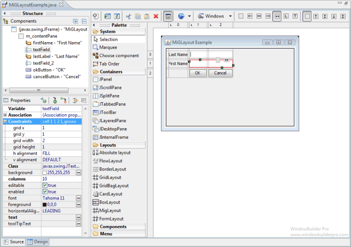
- The MiGLayout jar file (miglayout-3.6.jar) will automatically be added to your project and the classpath adjusted
- Graphical feedback is provided for all column, row and cell interactions
- Column and row properties may be changed via a popup menu or property dialog
- Convert existing layouts (null, GridBagLayout, etc.) to MiGLayout with intelligent column and row creation
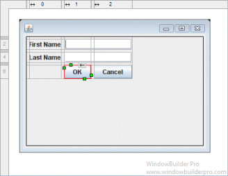
Popup Header Menu
- Right-click on the header area to access the popup header menu
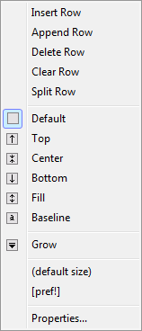 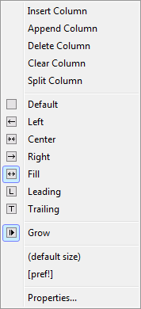
- Insert new columns or rows before the current column or row
- Add a new column or row at the end of the current list
- Delete entire columns or rows or just their widget contents
- Set the column alignment to left, right, center or fill
- Specify that the column or row should grow to fill the available space
- Set columns and rows to default or preferred sizes
- Edit the properties of the current column or row
Graphical Feedback
- When moving a widget or adding a new widget, open cells are
highlighted green while populated cells are highlighted red and
insertion points are highlighted in yellow
 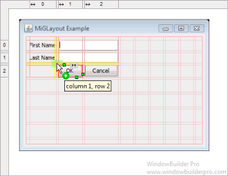
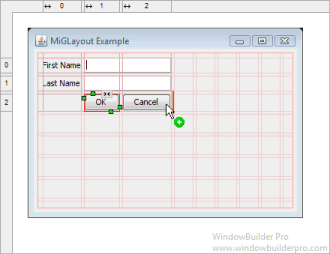
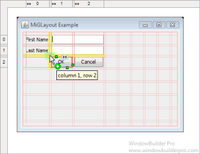
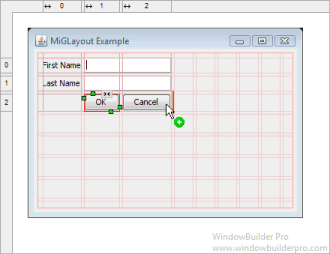
- Phantom drop point to the right and below the current cells
will create new columns and rows as needed
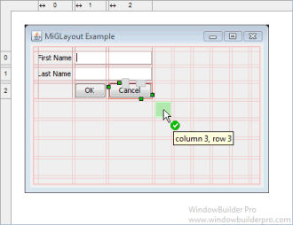 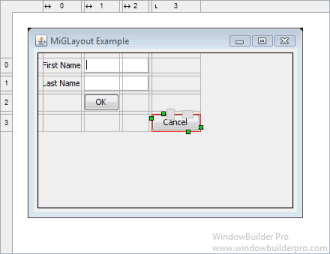
- The currently selected cell shows its column and row spanning
handles and alignment handles

- Set the alignment of a cell using its popup alignment menu or the toolbar
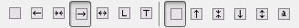
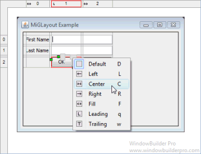 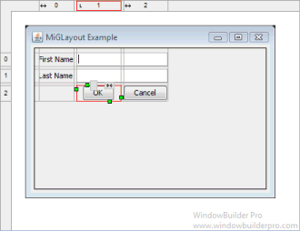
- Right-click on a column to set its grow property
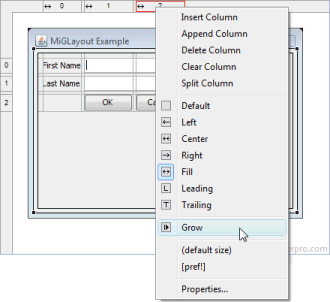 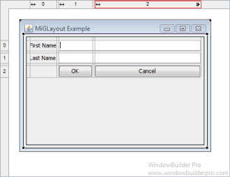
- Column and row sizing handles make it easy to set the size of a column or row
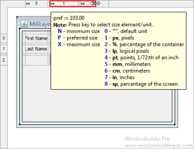
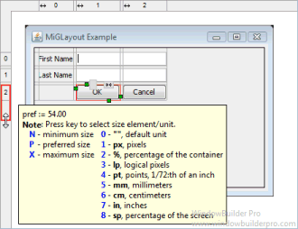 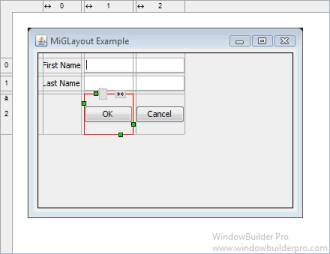

- Reorder columns and rows by dragging them
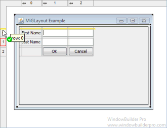 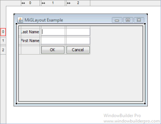
- Column and rows borders are indicated with gray lines
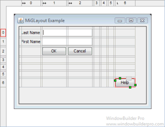
- Interactive column and row spanning feedback is provided
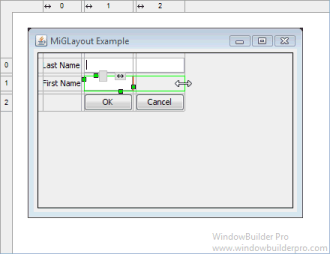 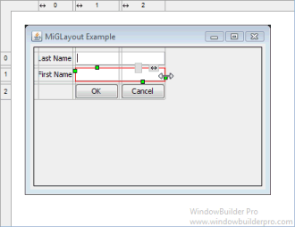
- Split cells horizontally or vertically
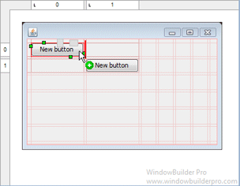 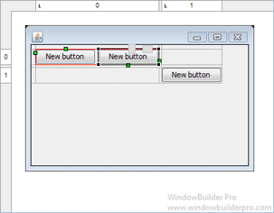
- Full keyboard support for quickly changing alignment values
Cells D default horizontal Shift+D default vertical F fill horizontal Shift+F fill vertical L, C, R left/center/right for horizontal T, M, B top/middle/bottom for vertical
Column, Row & Cell Editing
- Double click on a column or row to access its property dialog
- Switch between columns and rows using the arrow buttons
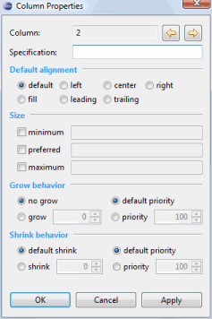 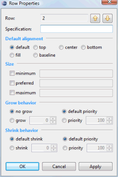
- Enter arbitrary specifications into the Specification field
- Set the column or row alignment
- Specify the resize behavior and the relative weights of each column or row
- Set the minimum, maximum and preferred size of the column or row
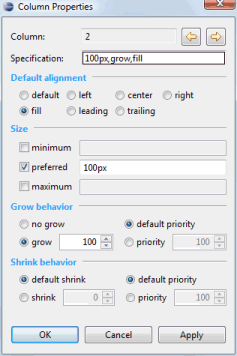 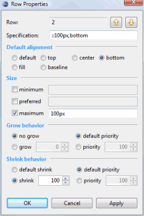
- Floating layout assistant for cell constraints

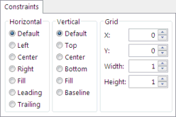
- Edit individual constraint properties for each widget in the Property Pane or the right-click context menu of the widget..
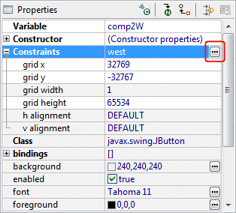 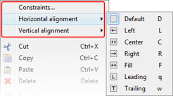
- Click the "..." button to specify an arbitrary cell constraint specification (such as docking)
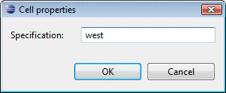 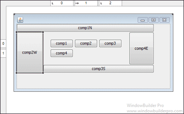
- Specify arbitrary layout, column & row constraints (such as panel insets)
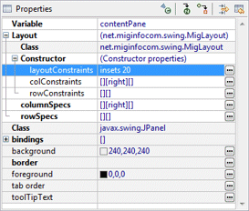 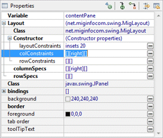
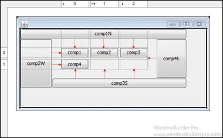
- Open the Columns or Rows editing dialog from the
Property Pane or the right-click context menu of the panel.
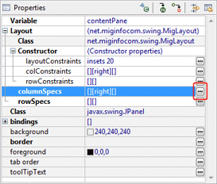 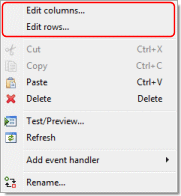
- Insert or add new columns and rows
- Open the property dialog for an individual column or row
- Rearrange the order of the columns or rows
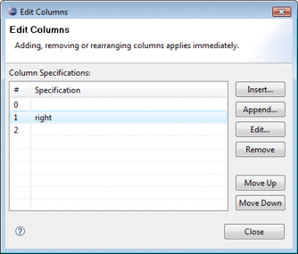
Preferences
- Control whether automatic grab is used for text widgets, comboboxes, tables, etc.
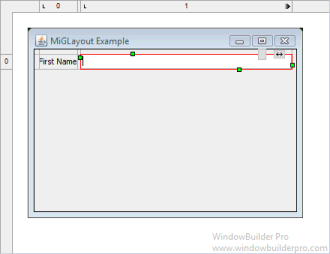 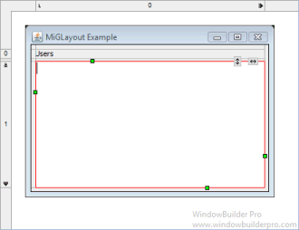
- Control whether labels are automatically right-aligned when next to a text widget
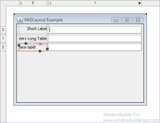 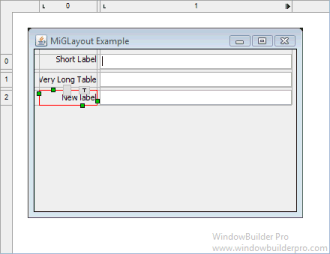
Source Code Generation & Parsing
- Intelligently convert existing layouts (null, GridBagLayout, etc.) to MiGLayout with column and row creation
- Generated code will use string-based constants
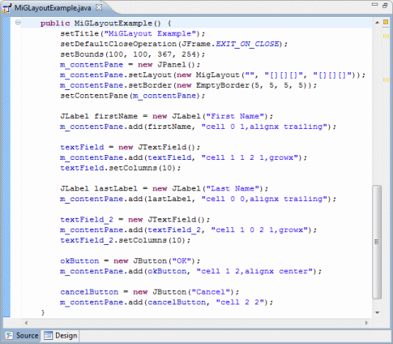